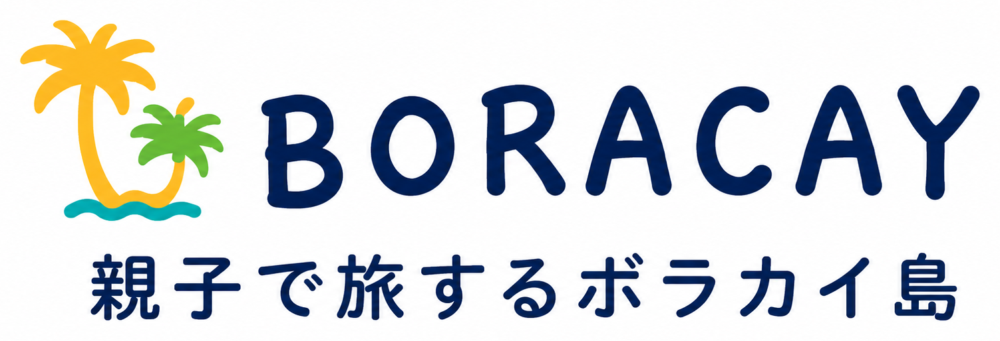

確認しておきたいこと
移動・食事・医療・安全など、同行する大人が出発前に確認しておきたい情報をまとめました。
ボラカイ島は、空港に着いたらすぐホテルに着く場所ではありません。移動が3段階あります。
成田・関西・中部などの国際空港からフィリピンへ。直行便またはマニラ・セブ等での乗り継ぎがあります。
カティクラン空港（Caticlan/MPH）またはカリボ空港（Kalibo/KLO）へ。空港によって港までの距離が大きく異なります。
車またはトライシクル等で移動。カティクランなら約5〜10分、カリボなら1.5〜2時間以上かかります。
環境税・ターミナルフィーの支払い（金額・方式は変更あり）、チケット確認など。混雑する時間帯があります。
小型ボートで海を渡ります。所要時間は約10〜15分程度。揺れる場合があり、荷物の管理も必要です。
トライシクルや送迎車でホテルへ移動。事前にホテルの送迎サービスを確認しておくとスムーズです。
| 項目 | カティクラン空港 (MPH) | カリボ空港 (KLO) |
|---|---|---|
| 港までの距離 | 近い 約5〜10分 | 遠い 1.5〜2時間以上 |
| 親子の移動負担 | 比較的少なめ。荷物が多くても移動しやすい | 長距離陸路移動あり。疲れ・乗り物酔い・トイレに注意 |
| 空港規模・設備 | 小さめ。売店・休憩スペースは限られる | やや大きめ。待ち時間に対応しやすい |
| 注意点 | 就航路線・航空会社が少ない。天候による欠航リスクに注意 | 陸路が長く、道路状況により移動時間が変わる |
| 向いているケース | 移動負担を最小限にしたい親子 | より多くの直行便を選びたい、コストを抑えたい場合 |
港での手続きや船の乗り方は、初めてだと戸惑うことがあります。ホテルや旅行会社の一括送迎サービスを利用すると、手続きがスムーズになります。
ビーチエリア
比較的落ち着いた雰囲気。高級リゾートが多く、砂浜が広めで混雑が少ない傾向があります。
メインエリア
D'Mallや飲食店・ATMが近く便利。ただし人・音・アクティビティ業者が多いエリアです。
静かなエリア
比較的落ち着いて過ごしやすいエリア。ビーチの混雑が少なく、のんびりしたい親子に向いています。
ショッピングエリア
食事・ドリンク・軽食・お土産・ATM・薬局が集まるエリア。必要なものの買い足しに便利です。
別ビーチ
ホワイトビーチとは別のビーチ。島の北側にあり、移動が必要ですが静かで砂浜の雰囲気が異なります。
現地で食べられる選択肢を事前に把握しておくと安心です。挑戦させるより、食べられるものを確保することを優先してください。
📞 緊急連絡先カード
現地緊急番号
日本の窓口
ボラカイ島近隣の医療機関（参考）
その他
※ 上記情報は参考として記載しています。電話番号・診療時間・受け入れ可否は変更になる場合があります。出発前に最新情報を確認してください。
下記は情報作成時に参照した主な出典です。内容は変更になる場合があります。出発前には必ず各公式サイトで最新情報をご確認ください。